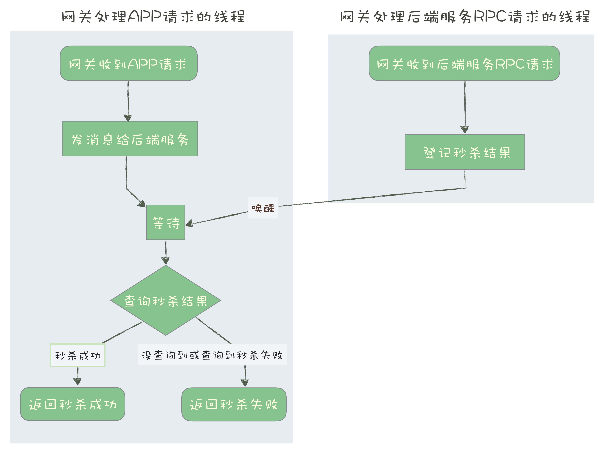
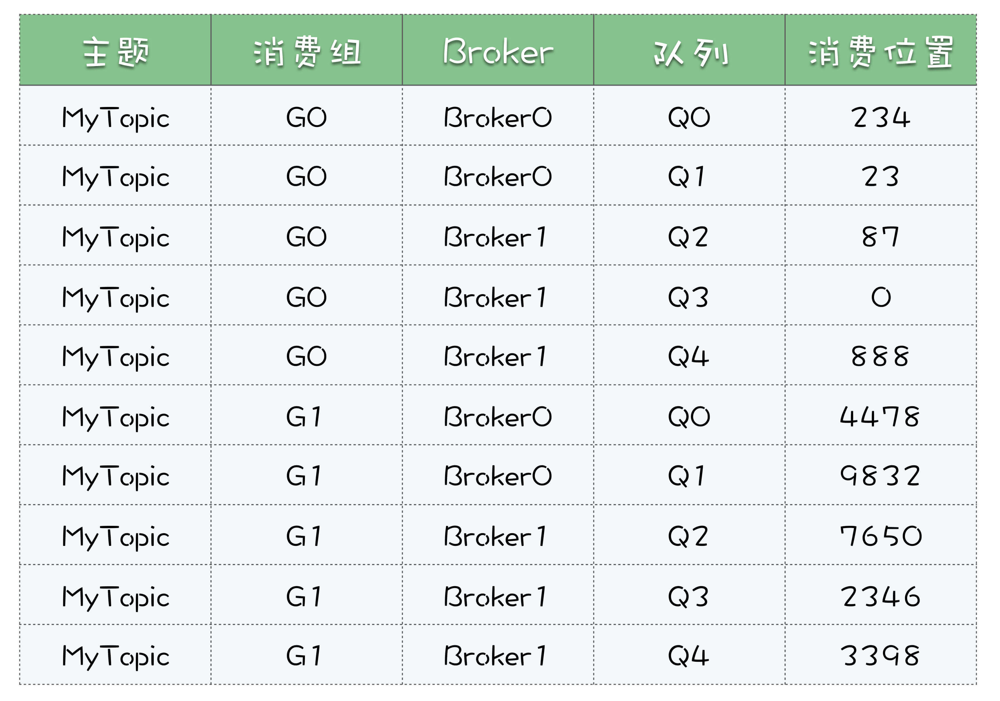

- 00 开篇词 优秀的程序员，你的技术栈中不能只有“增删改查”.md.html
- 00 预习 怎样更好地学习这门课？.md.html
- 01 为什么需要消息队列？.md.html
- 02 该如何选择消息队列？.md.html
- 03 消息模型：主题和队列有什么区别？.md.html
- 04 如何利用事务消息实现分布式事务？.md.html
- 05 如何确保消息不会丢失.md.html
- 06 如何处理消费过程中的重复消息？.md.html
- 07 消息积压了该如何处理？.md.html
- 08 答疑解惑（一） 网关如何接收服务端的秒杀结果？.md.html
- 09 学习开源代码该如何入手？.md.html
- 10 如何使用异步设计提升系统性能？.md.html
- 11 如何实现高性能的异步网络传输？.md.html
- 12 序列化与反序列化：如何通过网络传输结构化的数据？.md.html
- 13 传输协议：应用程序之间对话的语言.md.html
- 14 内存管理：如何避免内存溢出和频繁的垃圾回收？.md.html
- 15 Kafka如何实现高性能IO？.md.html
- 16 缓存策略：如何使用缓存来减少磁盘IO？.md.html
- 17 如何正确使用锁保护共享数据，协调异步线程？.md.html
- 18 如何用硬件同步原语（CAS）替代锁？.md.html
- 19 数据压缩：时间换空间的游戏.md.html
- 20 RocketMQ Producer源码分析：消息生产的实现过程.md.html
- 21 Kafka Consumer源码分析：消息消费的实现过程.md.html
- 22 Kafka和RocketMQ的消息复制实现的差异点在哪？.md.html
- 23 RocketMQ客户端如何在集群中找到正确的节点？.md.html
- 24 Kafka的协调服务ZooKeeper：实现分布式系统的“瑞士军刀”.md.html
- 25 RocketMQ与Kafka中如何实现事务？.md.html
- 26 MQTT协议：如何支持海量的在线IoT设备.md.html
- 27 Pulsar的存储计算分离设计：全新的消息队列设计思路.md.html
- 28 答疑解惑（二）：我的100元哪儿去了？.md.html
- 29 流计算与消息（一）：通过Flink理解流计算的原理.md.html
- 30 流计算与消息（二）：在流计算中使用Kafka链接计算任务.md.html
- 31 动手实现一个简单的RPC框架（一）：原理和程序的结构.md.html
- 32 动手实现一个简单的RPC框架（二）：通信与序列化.md.html
- 33 动手实现一个简单的RPC框架（三）：客户端.md.html
- 34 动手实现一个简单的RPC框架（四）：服务端.md.html
- 35 答疑解惑（三）：主流消息队列都是如何存储消息的？.md.html
- 加餐 JMQ的Broker是如何异步处理消息的？.md.html
- 结束语 程序员如何构建知识体系？.md.html
- 捐赠
08 答疑解惑（一） 网关如何接收服务端的秒杀结果？
你好，我是李玥。
我们的“消息队列高手课”专栏自从上线到现在，同学们的学习热情和参与度都非常高。每一节课都有很多同学留言评论，这些留言里有总结知识分享收获的，有提出精彩问题的，还有给自己加油打气立 Flag 的，竟然还有说老师长得像黄渤的。我又仔细去看了一下配图，还是真挺像的。下次老师和极客时间的设计师小姐姐说一样，让她们照着吴彦祖来 P 图。
同学们每一条的留言我都认真看过，大部分留言我都给出了回复。在基础篇的最后一节课，我来统一解答一下大家都比较关注的一些问题。
1. 网关如何接收服务端的秒杀结果？
在《[01 | 为什么需要消息队列？]》这节课里面，我们举了一个秒杀的例子，这个例子是用来说明消息队列是如何来实现异步处理的。课后很多同学留言提问，网关在发送消息之后，是如何来接收后端服务的秒杀结果，又如何来给 APP 返回响应的呢？
在解答这个问题之前，我需要先说一下，实际生产环境中的秒杀系统，远比我们举的这个例子复杂得多，实现方案也是多种多样的，不是说一定要按照我们这个例子的方式来实现。
在这个例子中，网关接收后端服务秒杀结果，实现的方式也不只一种，这里我给大家提供一个比较简单的方案。
比如说，用 Java 语言来举例子：
public class RequestHandler {
// ID 生成器
@Inject
private IdGenerator idGenerator;
// 消息队列生产者
@Inject
private Producer producer;
// 保存秒杀结果的 Map
@Inject
private Map<Long, Result> results;
// 保存 mutex 的 Map
private Map<Long, Object> mutexes = new ConcurrentHashMap<>();
// 这个网关实例的 ID
@Inject
private long myId;
@Inject
private long timeout;
// 在这里处理 APP 的秒杀请求
public Response onRequest(Request request) {
// 获取一个进程内唯一的 UUID 作为请求 id
Long uuid = idGenerator.next();
try {
Message msg = composeMsg(request, uuid, myId);
// 生成一个 mutex，用于等待和通知
Object mutex = new Object();
mutexes.put(uuid, mutex)
// 发消息
producer.send(msg);
// 等待后端处理
synchronized(mutex) {
mutex.wait(timeout);
}
// 查询秒杀结果
Result result = results.remove(uuid);
// 检查秒杀结果并返回响应
if(null != result && result.success()){
return Response.success();
}
} catch (Throwable ignored) {}
finally {
mutexes.remove(uuid);
}
// 返回秒杀失败
return Response.fail();
}
// 在这里处理后端服务返回的秒杀结果
public void onResult(Result result) {
Object mutex = mutexes.get(result.uuid());
if(null != mutex) { // 如果查询不到，说明已经超时了，丢弃 result 即可。
// 登记秒杀结果
results.put(result.uuid(), result);
// 唤醒处理 APP 请求的线程
synchronized(mutex) {
mutex.notify();
}
}
}
}
在这个方案中，网关在收到 APP 的秒杀请求后，直接给消息队列发消息。至于消息的内容，并不一定是 APP 请求的 Request，只要包含足够的字段就行了，比如用户 ID、设备 ID、请求时间等等。另外，还需要包含这个请求的 ID 和网关的 ID，这些后面我们会用到。
如果发送消息失败，可以直接给 APP 返回秒杀失败结果，成功发送消息之后，线程就阻塞等待秒杀结果。这里面不可能无限等待下去，需要设定一个等待的超时时间。
等待结束之后，去存放秒杀结果的 Map 中查询是否有返回的秒杀结果，如果有就构建 Response，给 APP 返回秒杀结果，如果没有，按秒杀失败处理。
这是处理 APP 请求的线程，接下来我们来看一下，网关如何来接收从后端秒杀服务返回的秒杀结果。
我们可以选择用 RPC 的方式来返回秒杀结果，这里网关节点是 RPC 服务端，后端服务为客户端。之前网关发出去的消息中包含了网关的 ID，后端服务可以通过这个网关 ID 来找到对应的网关实例，秒杀结果中需要包含请求 ID，这个请求 ID 也是从消息中获取的。
网关收到后端服务的秒杀结果之后，用请求 ID 为 Key，把这个结果保存到秒杀结果的 Map 中，然后通知对应的处理 APP 请求的线程，结束等待。我刚刚说过，处理 APP 请求的线程，在结束等待之后，会去秒杀的结果 Map 中查询这个结果，然后再给 APP 返回响应。
我把这个处理过程的流程图放在这里，便于你理解：
 这个解决方案还不是一个性能最优的方案，处理 APP 请求的线程需要同步等待秒杀结果。后面课程中我们会专门来讲，如何使用异步方式来提升程序的性能。
2. 详解 RocketMQ 和 Kafka 的消息模型
我在看《03 | 消息模型：主题和队列有什么区别？》这节课的留言时发现，不少同学对 RocketMQ 和 kafka 的消息模型理解的还不是很透彻，这两个消息队列产品的消息模型是一样的，我在这里，再把这个模型相关的概念，通过一个例子详细地说一说。
假设有一个主题 MyTopic，我们为主题创建 5 个队列，分布到 2 个 Broker 中。

先说消息生产这一端，假设我们有 3 个生产者实例：Produer0，Produer1 和 Producer2。
这 3 个生产者是如何对应到 2 个 Broker 的，又是如何对应到 5 个队列的呢？这个很简单，不用对应，随便发。每个生产者可以在 5 个队列中轮询发送，也可以随机选一个队列发送，或者只往某个队列发送，这些都可以。比如 Producer0 要发 5 条消息，可以都发到队列 Q0 里面，也可以 5 个队列每个队列发一条。
然后说消费端，很多同学没有搞清楚消费组、消费者和队列这几个概念的对应关系。
每个消费组就是一份订阅，它要消费主题 MyTopic 下，所有队列的全部消息。注意，队列里的消息并不是消费掉就没有了，这里的“消费”，只是去队列里面读了消息，并没有删除，消费完这条消息还是在队列里面。
多个消费组在消费同一个主题时，消费组之间是互不影响的。比如我们有 2 个消费组：G0 和 G1。G0 消费了哪些消息，G1 是不知道的，也不用知道。G0 消费过的消息，G1 还可以消费。即使 G0 积压了很多消息，对 G1 来说也没有任何影响。
然后我们再说消费组的内部，一个消费组中可以包含多个消费者的实例。比如说消费组 G1，包含了 2 个消费者 C0 和 C1，那这 2 个消费者又是怎么和主题 MyTopic 的 5 个队列对应的呢？
由于消费确认机制的限制，这里面有一个原则是，在同一个消费组里面，每个队列只能被一个消费者实例占用。至于如何分配，这里面有很多策略，我就不展开说了。总之保证每个队列分配一个消费者就行了。比如，我们可以让消费者 C0 消费 Q0，Q1 和 Q2，C1 消费 Q3 和 Q4，如果 C0 宕机了，会触发重新分配，这时候 C1 同时消费全部 5 个队列。
再强调一下，队列占用只是针对消费组内部来说的，对于其他的消费组来说是没有影响的。比如队列 Q2 被消费组 G1 的消费者 C1 占用了，对于消费组 G2 来说，是完全没有影响的，G2 也可以分配它的消费者来占用和消费队列 Q2。
最后说一下消费位置，每个消费组内部维护自己的一组消费位置，每个队列对应一个消费位置。消费位置在服务端保存，并且，消费位置和消费者是没有关系的。每个消费位置一般就是一个整数，记录这个消费组中，这个队列消费到哪个位置了，这个位置之前的消息都成功消费了，之后的消息都没有消费或者正在消费。
我把咱们这个例子的消费位置整理成下面的表格，便于你理解。

你可以看到，这个表格中并没有消费者这一列，也就是说消费者和消费位置是没有关系的。
3. 如何实现单个队列的并行消费？
下面说一下《03 | 消息模型：主题和队列有什么区别？》这节课的思考题：如果不要求严格顺序，如何实现单个队列的并行消费？关于这个问题，有很多的实现方式，在 JMQ（京东自研的消息队列产品）中，它实现的思路是这样的。
比如说，队列中当前有 10 条消息，对应的编号是 0-9，当前的消费位置是 5。同时来了三个消费者来拉消息，把编号为 5、6、7 的消息分别给三个消费者，每人一条。过了一段时间，三个消费成功的响应都回来了，这时候就可以把消费位置更新为 8 了，这样就实现并行消费。
这是理想的情况。还有可能编号为 6、7 的消息响应回来了，编号 5 的消息响应一直回不来，怎么办？这个位置 5 就是一个消息空洞。为了避免位置 5 把这个队列卡住，可以先把消费位置 5 这条消息，复制到一个特殊重试队列中，然后依然把消费位置更新为 8，继续消费。再有消费者来拉消息的时候，优先把重试队列中的那条消息给消费者就可以了。
这是并行消费的一种实现方式。需要注意的是，并行消费开销还是很大的，不应该作为一个常规的，提升消费并发的手段，如果消费慢需要增加消费者的并发数，还是需要扩容队列数。
4. 如何保证消息的严格顺序？
很多同学在留言中问，怎么来保证消息的严格顺序？我们多次提到过，主题层面是无法保证严格顺序的，只有在队列上才能保证消息的严格顺序。
如果说，你的业务必须要求全局严格顺序，就只能把消息队列数配置成 1，生产者和消费者也只能是一个实例，这样才能保证全局严格顺序。
大部分情况下，我们并不需要全局严格顺序，只要保证局部有序就可以满足要求了。比如，在传递账户流水记录的时候，只要保证每个账户的流水有序就可以了，不同账户之间的流水记录是不需要保证顺序的。
如果需要保证局部严格顺序，可以这样来实现。在发送端，我们使用账户 ID 作为 Key，采用一致性哈希算法计算出队列编号，指定队列来发送消息。一致性哈希算法可以保证，相同 Key 的消息总是发送到同一个队列上，这样可以保证相同 Key 的消息是严格有序的。如果不考虑队列扩容，也可以用队列数量取模的简单方法来计算队列编号。
© 2019 - 2023 Liangliang Lee. Powered by gin and hexo-theme-book.